From sinusoids to RoPE to NoPE
Introduction
The previous attention (Self-Attention and Multi-Head Attention, Attention Variants) posts focused on which tokens attend to which other tokens: Q/K scores, causal masks, multi-head attention, and efficient variants. This post covers the missing axis: how does the model know where each token sits?
We’ll use one running example throughout: “The CEO announced record earnings on Friday” (7 tokens, zero-indexed from The = 0 to Friday = 6). Code examples use d_model = 64 with n_heads = 4, giving d_k = d_model / n_heads = 16.
Without positional encoding, “CEO” at position 1 and another “CEO” at position 5 would produce identical Q, K, V vectors before context is mixed in. Self-attention treats them as the same token unless something else marks their positions. The model cannot distinguish “The CEO announced” from “announced CEO The”. Without positional encoding or an asymmetric mask, self-attention is permutation-equivariant: shuffle the input and the output shuffles to match.
Every PE scheme solves this by injecting position information somewhere in the transformer. The approaches evolved as each generation hit a wall the previous one couldn’t scale past, but they all differ mainly in where that signal enters the computation.
Explicit PE schemes inject position at one of three points in the attention pipeline; NoPE skips explicit injection:
- Absolute PE: at the input, adds a position vector to each token embedding before projection
- RoPE: at the vectors, rotates Q and K after projection, before the dot product
- Relative PE / ALiBi: at the scores, adds a position-dependent bias after the dot product, before softmax
- NoPE: no explicit injection, relies on the causal mask in decoder-only models
Note: All implementations in this post are available as runnable notebooks at github.com/davidwhiteboard/llm_from_scratch.
Absolute Positional Encoding
Each of our 7 tokens “The CEO announced record earnings on Friday” has a 64-dim embedding (d_model = 64). If “announced” appeared again at position 5, the embedding table alone would not know which occurrence was which. How do you stamp each position with a unique signature that the model can learn from?
The simplest answer is to add a position-dependent vector directly to the token embedding before it enters the transformer.
- token_embedding_i: the token’s learned embedding
- PE(i): a vector unique to position
i - x_i: the position-aware input to the transformer
There are two common ways to build that PE(i) vector: compute it from a fixed sinusoidal formula, or learn it as a trainable embedding table.
Sinusoidal Encoding (Vaswani et al., 2017)
The original Transformer used deterministic sine and cosine functions at different frequencies to generate position vectors, no learned parameters needed.
- pos: token position in the sequence (0, 1, 2, …)
- k: dimension-pair index, from
0(fastest pair) tod_model/2 - 1(slowest pair) - 2k, 2k+1: even/odd dimensions within each pair, sharing the same frequency
- 10000: base controlling how spread out the frequencies are
For our 7-token sentence with d_model = 64, this produces a [7, 64] matrix where each row is a unique position fingerprint. “The” at position 0 gets PE(0), “CEO” gets PE(1), and so on.
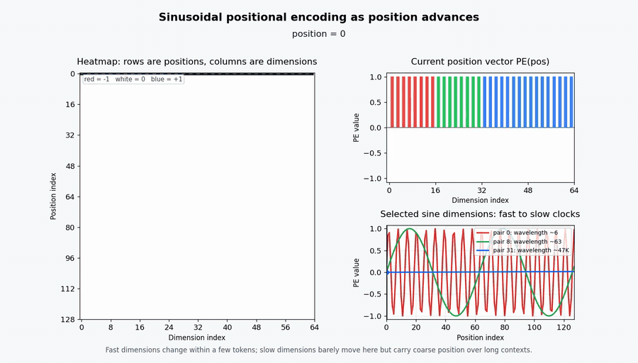
T = 128, d_model = 64. Fast dimensions cycle every few tokens; slow dimensions barely move, carrying coarse position over long contexts.- Each position gets a unique vector: no two rows are identical
- Nearby positions have similar vectors:
PE(2)andPE(3)differ only slightly, giving the model a smooth notion of “closeness” - The wavelength spectrum spans from
2πup toward10000 * 2π: dimension 0 completes a full cycle every ~6 positions, dimension 63 barely moves across the entire sequence
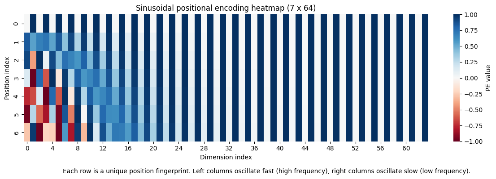
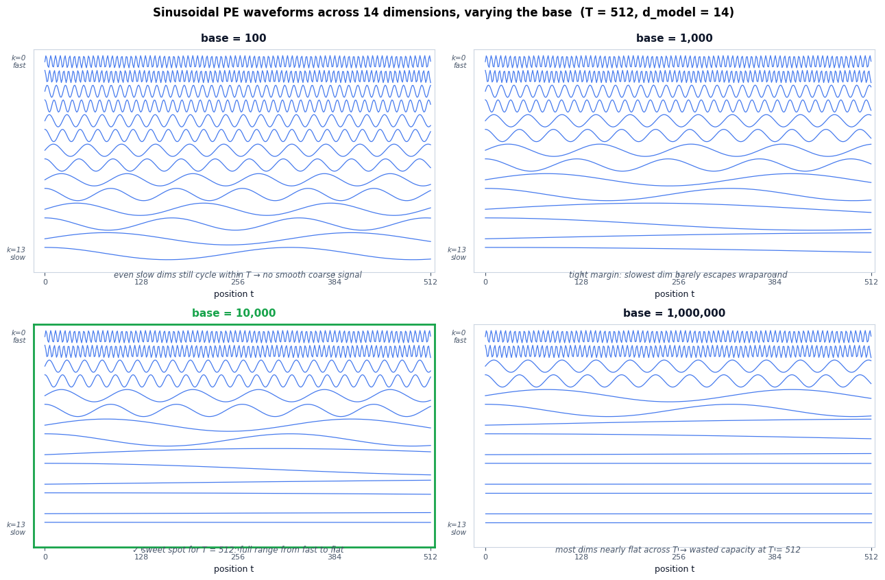
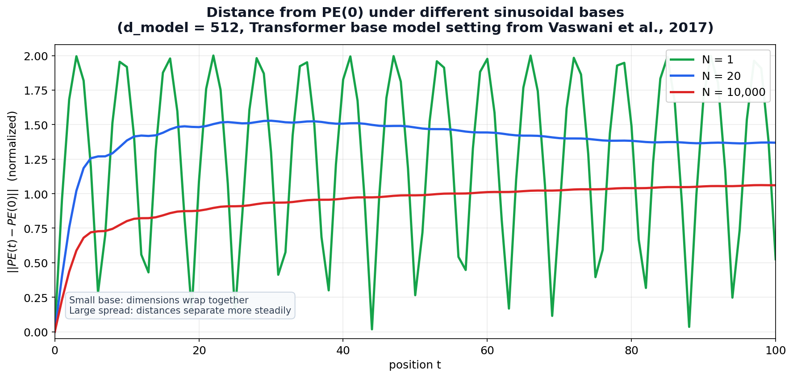
Why sinusoids? Vaswani et al. chose them because a fixed offset is representable by a linear transform: for each sine/cosine pair, PE(pos + k) is just PE(pos) rotated by an angle determined by k. In principle, this lets the model learn relative patterns like “3 positions to the left.”
Learned Positional Embeddings
GPT-2 and BERT replaced sinusoids with a learned embedding table, nn.Embedding(max_len, d_model). Each position gets a trainable vector, just like each token gets a trainable embedding.
PE = nn.Embedding(max_len, d_model)
x = token_embeddings + PE(positions) # positions = [0, 1, 2, ..., T-1]- PE.weight
[max_len, d_model]: learned position vectors - max_len: hard ceiling on sequence length (512 for BERT, 1024 for GPT-2)
class SinusoidalPE(nn.Module):
"""
PE(pos, 2k) = sin(pos / 10000^(2k / d_model))
PE(pos, 2k+1) = cos(pos / 10000^(2k / d_model))
"""
def __init__(self, d_model: int, max_len: int = 5000, dropout: float = 0.1):
super().__init__()
self.dropout = nn.Dropout(p=dropout)
pe = torch.zeros(max_len, d_model) # [max_len, d_model]
position = torch.arange(0, max_len).unsqueeze(1).float() # [max_len, 1]
div_term = torch.exp(
torch.arange(0, d_model, 2).float() * -(math.log(10000.0) / d_model)
) # [d_model/2]
pe[:, 0::2] = torch.sin(position * div_term) # even dims
pe[:, 1::2] = torch.cos(position * div_term) # odd dims
pe = pe.unsqueeze(0) # [1, max_len, d_model]
self.register_buffer("pe", pe)
def forward(self, x: torch.Tensor) -> torch.Tensor:
"""x: [batch, seq_len, d_model] → same shape, position added."""
x = x + self.pe[:, :x.size(1)] # [batch, seq_len, d_model]
return self.dropout(x)
class LearnedPE(nn.Module):
"""Each position gets a trainable d_model-dimensional vector."""
def __init__(self, d_model: int, max_len: int = 512, dropout: float = 0.1):
super().__init__()
self.embedding = nn.Embedding(max_len, d_model) # [max_len, d_model]
self.dropout = nn.Dropout(p=dropout)
def forward(self, x: torch.Tensor) -> torch.Tensor:
T = x.size(1)
positions = torch.arange(T, device=x.device) # [seq_len]
pe = self.embedding(positions) # [seq_len, d_model]
return self.dropout(x + pe)Gotchas and Trade-offs
- Length extrapolation is not guaranteed: sinusoidal PE can extrapolate past
max_lenin theory, but in practice attention patterns degrade. Learned PE cannot extrapolate at all, position 1025 has no embedding ifmax_len = 1024 - Relative distance is implicit:
PE(2)tells the model “I am at position 2”, but doesn’t directly encode “I am 3 positions before position 5”. The model must learn to compute relative distance from absolute coordinates - Content gets mixed with absolute coordinates: “CEO” at position 1 and “CEO” at position 4 get different representations even when the local context is identical. The model spends capacity encoding “where am I” instead of “who is near me”
Key Takeaway
Absolute PE stamps each position with a unique vector, solving the permutation problem but creating a new one: the model knows where each token is, but not directly how far apart any two tokens are. “CEO” knows it sits at position 1; computing that “announced” is 1 step to the right requires learning a function from absolute coordinates.
Relative Positional Encoding
If “CEO announced” appears at positions 1-2 in one sentence and at 50-51 in another, the model should recognize the same relationship without relearning it from new absolute coordinates. Shaw et al. introduced this approach in “Self-Attention with Relative Position Representations” (NAACL 2018): instead of adding position to the input, add it to the attention scores.
- q_i @ k_j: the standard content-based attention score
- a^K_{j-i}
[d_k]: learned embedding indexed by clipped signed offsetclip(j - i, -K, K). SuperscriptKindicates key-side; Shaw also defined a value-sidea^Vused when aggregating values, dropped here for simplicity - K: maximum relative offset magnitude (positions beyond
Kare clipped to the boundary)
The key shift: a^K_{j-i} depends only on j - i (signed offset), not on i or j individually.
The Clipping Mechanism
Shaw et al. clipped relative positions to a range [-K, K], arguing that precise relative offset beyond a certain magnitude doesn’t matter much; “10 tokens to the left” and “15 tokens to the left” carry roughly the same signal.
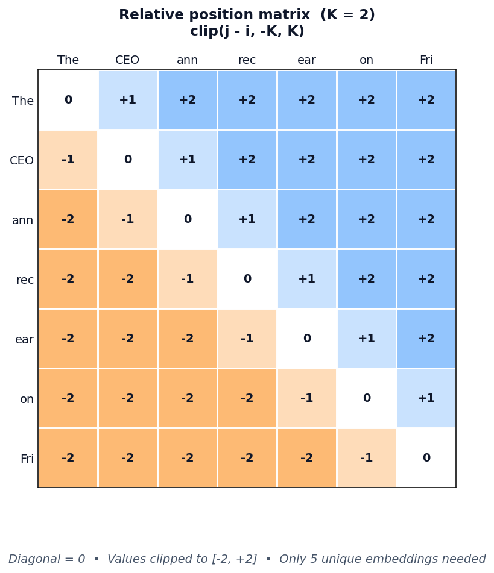
- Diagonal = 0: each token’s offset to itself
- Values clipped to [-2, 2]: only
2K + 1 = 5unique embeddings needed - “announced” attending to “CEO” looks up
a^K_{-1}(j − i = 1 − 2 = −1, “1 step to my left”), regardless of absolute position
Same Family, Different Engineering
Shaw et al. was the first to bring relative position into transformer self-attention, but others refined the idea with different trade-offs:
- Transformer-XL (Dai et al., ACL 2019): decomposed the attention score into four terms: content × content, content × position, plus two global biases (a global content bias
uand a global position biasv). More expressive, but more parameters (u,v,W_K_Rper head) - T5 (Raffel et al., 2020): collapsed everything to a single learned scalar bias per relative-position bucket, with log-spaced buckets (nearby offsets get finer buckets; far offsets share coarser buckets). Fewer parameters, same core idea
All three inject relative position into the attention logits rather than the input. The implementation below follows Shaw et al., the simplest of the three.
class RelativePositionAttention(nn.Module):
"""
score(i, j) = q_i @ k_j + q_i @ a_{clip(j-i, -K, K)}
Args:
d_model: Input embedding dimension.
n_heads: Number of attention heads.
max_rel_dist: Maximum relative offset magnitude K (positions clipped to [-K, K]).
"""
def __init__(self, d_model: int, n_heads: int, max_rel_dist: int = 16):
super().__init__()
self.n_heads = n_heads
self.d_k = d_model // n_heads
self.max_rel_dist = max_rel_dist
self.W_q = nn.Linear(d_model, d_model, bias=False)
self.W_k = nn.Linear(d_model, d_model, bias=False)
self.W_v = nn.Linear(d_model, d_model, bias=False)
self.W_o = nn.Linear(d_model, d_model, bias=False)
# 2K+1 learned embeddings, one per clipped signed offset
self.rel_embed = nn.Embedding(2 * max_rel_dist + 1, self.d_k) # [2K+1, d_k]
def forward(self, x: torch.Tensor, mask=None) -> tuple[torch.Tensor, torch.Tensor]:
B, T, _ = x.shape
Q = self.W_q(x).view(B, T, self.n_heads, self.d_k).transpose(1, 2) # [B, h, T, d_k]
K = self.W_k(x).view(B, T, self.n_heads, self.d_k).transpose(1, 2)
V = self.W_v(x).view(B, T, self.n_heads, self.d_k).transpose(1, 2)
content_scores = torch.matmul(Q, K.transpose(-2, -1)) # [B, h, T, T]
# Relative position score term
rel_indices = self._relative_indices(T, x.device) # [T, T]
rel_embeds = self.rel_embed(rel_indices) # [T, T, d_k]
rel_scores = torch.einsum("bhid,ijd->bhij", Q, rel_embeds) # [B, h, T, T]
scores = (content_scores + rel_scores) / math.sqrt(self.d_k)
if mask is not None:
scores = scores.masked_fill(mask.unsqueeze(0).unsqueeze(0), float("-inf"))
weights = F.softmax(scores, dim=-1) # [B, h, T, T]
context = torch.matmul(weights, V) # [B, h, T, d_k]
context = context.transpose(1, 2).contiguous().view(B, T, -1)
return self.W_o(context), weights
def _relative_indices(self, T: int, device) -> torch.Tensor:
"""[T, T] matrix of clipped relative positions shifted to [0, 2K]."""
positions = torch.arange(T, device=device)
rel = positions.unsqueeze(0) - positions.unsqueeze(1) # j - i
rel = rel.clamp(-self.max_rel_dist, self.max_rel_dist)
return rel + self.max_rel_dist # shift for embedding lookupGotchas and Trade-offs
- Translation-invariant position term: the relative positional contribution for “CEO announced” is the same whether it appears at positions 1-2 or 50-51
- Complexity overhead: Shaw-style relative PE adds a query-dependent
[T, T]relative score term, plus extra tensor ops for the position embeddings. Materializing this at 128K tokens is a 16B-entry score grid per head - Family variants differ in parameter count: Shaw et al. uses learned
[d_k]vector embeddings per relative offset (key-side, optionally per-head; the implementation above shares them across heads as a common simplification). Transformer-XL addsu,v, andW_K_R. T5 collapses everything to a single learned scalar bias per relative-position bucket - Stock fast attention kernels don’t help: arbitrary learned
[T, T]biases break the tiling strategy that makes FlashAttention fast. Specialized kernels exist for structured biases (ALiBi has one in FlashAttention v2.4+), but a general learned relative bias still requires custom kernel work
Key Takeaway
Relative PE shifts position information from the input embeddings into the attention score itself, encoding signed relative offset rather than absolute identity. The model gets a direct positional term for “CEO is 1 step left of announced” instead of recovering that relation from two absolute stamps.
The trade-off is engineering: learned relative score terms are flexible, but they add extra [T, T] structure to attention. ALiBi keeps the same score-side idea but removes the learned table entirely: distance becomes a fixed linear penalty.
Attention with Linear Biases (ALiBi)
ALiBi is the simplest score-side relative position scheme: no learned distance embeddings, no buckets, no sinusoids. Press, Smith, and Lewis proposed it in “Train Short, Test Long” (ICLR 2022): subtract a fixed linear penalty from attention scores, proportional to query-key distance. Each head gets one scalar slope.
- q_i @ k_j: standard content-based attention score
- m: head-specific slope (fixed, not learned)
- |i - j|: absolute distance between query position
iand key positionj - The positional bias is always non-positive, so farther tokens get a lower positional contribution
- In decoder-only attention, future positions are masked; for valid keys
j <= i,|i - j| = i - j
The Bias Matrix
Keep the raw ALiBi penalty separate from the causal mask. For “announced” (position 2), the raw distance penalty with slope m is:
Raw ALiBi bias for query at position 2, slope m:
The(0) CEO(1) ann(2) rec(3) ear(4) on(5) Fri(6)
-2m -m 0 -m -2m -3m -4m- Position 2 → position 2: zero penalty (self-attention, distance = 0)
- Position 2 → position 1: penalty
m(1 step away) - Position 2 → position 6: raw penalty
4m, but this future token is masked in causal attention
After the causal mask, the effective row is:
Effective causal logits for query at position 2:
The(0) CEO(1) ann(2) rec(3) ear(4) on(5) Fri(6)
-2m -m 0 -inf -inf -inf -infThe full effective [7, 7] causal bias matrix, applied identically at every layer:
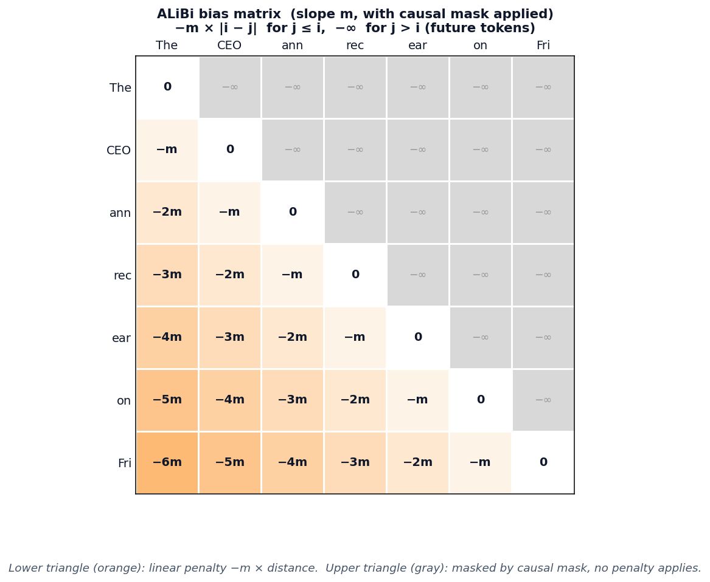
For decoder-only language models, ALiBi is paired with a causal mask. Future positions are -inf before softmax, so only the lower triangle contributes. The symmetric |i - j| formulation is an implementation convenience: precompute the full distance matrix, then let the causal mask handle future tokens separately.
Multi-Head Slopes
Each head gets a different slope, some heads attend broadly (small m), others focus locally (large m). The slopes form a geometric sequence:
For example, with n_heads = 8 (the canonical ALiBi slopes):
slopes = [2^(-1), 2^(-2), 2^(-3), 2^(-4), 2^(-5), 2^(-6), 2^(-7), 2^(-8)]
= [1/2, 1/4, 1/8, 1/16, 1/32, 1/64, 1/128, 1/256 ]- Head 0 (slope = 1/2): steep penalty, strong recency bias, focuses on nearby tokens
- Head 7 (slope = 1/256): gentle penalty, can attend to tokens hundreds of positions away
- For power-of-two
n_heads, the first slope and common ratio are both2^(-8/n_heads)
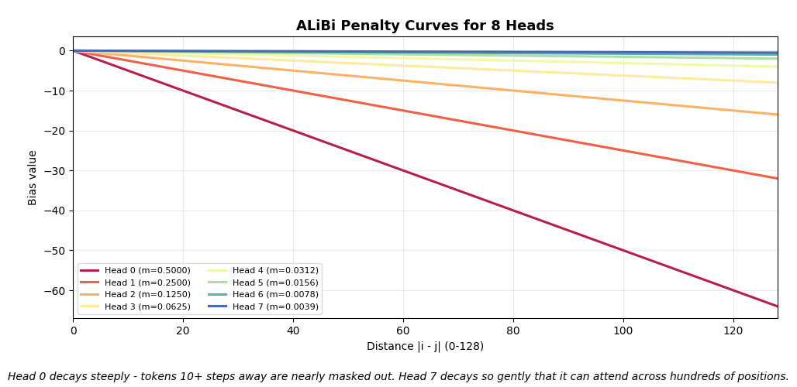
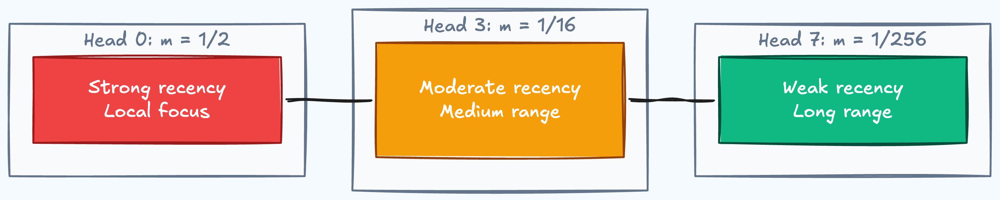
Train Short, Test Long
The key selling point: ALiBi models trained on short sequences extrapolate to longer ones at inference. Press et al. showed a 1.3B model trained on 1024 tokens extrapolating to 2048, matching the perplexity of a sinusoidal model trained on 2048, while using 11% less memory and 11% less compute.
The linear bias is defined for any distance, there’s no lookup table to run out of, no embedding to extrapolate. A key 2048 tokens away just gets a penalty of 2048 * m, which is a natural extension of the training-time pattern.
class ALiBi(nn.Module):
"""
ALiBi_score(i, j) = q_i @ k_j - m * |i - j|
No learned position parameters. Slopes are fixed geometric sequence.
Simplified for power-of-two n_heads; official ALiBi extends this for other counts.
Args:
d_model: Input embedding dimension.
n_heads: Number of attention heads.
max_len: Maximum sequence length for precomputing the distance matrix.
"""
def __init__(self, d_model: int, n_heads: int, max_len: int = 2048):
super().__init__()
assert n_heads & (n_heads - 1) == 0, "This simplified ALiBi example expects power-of-two n_heads"
self.n_heads = n_heads
self.d_k = d_model // n_heads
self.W_q = nn.Linear(d_model, d_model, bias=False)
self.W_k = nn.Linear(d_model, d_model, bias=False)
self.W_v = nn.Linear(d_model, d_model, bias=False)
self.W_o = nn.Linear(d_model, d_model, bias=False)
# Slopes: 2^(-8/n), 2^(-16/n), ..., 2^(-8)
slopes = torch.tensor(
[2 ** (-8 * h / n_heads) for h in range(1, n_heads + 1)]
) # [n_heads]
self.register_buffer("slopes", slopes)
# Toeplitz distance matrix: distances[i,j] = |i - j|
positions = torch.arange(max_len)
distances = (positions.unsqueeze(0) - positions.unsqueeze(1)).abs().float()
self.register_buffer("distances", distances) # [max_len, max_len]
def forward(self, x: torch.Tensor, mask=None) -> tuple[torch.Tensor, torch.Tensor]:
B, T, _ = x.shape
Q = self.W_q(x).view(B, T, self.n_heads, self.d_k).transpose(1, 2) # [B, h, T, d_k]
K = self.W_k(x).view(B, T, self.n_heads, self.d_k).transpose(1, 2)
V = self.W_v(x).view(B, T, self.n_heads, self.d_k).transpose(1, 2)
scores = torch.matmul(Q, K.transpose(-2, -1)) / math.sqrt(self.d_k)
# ALiBi bias: -slopes[h] * |i - j|
alibi_bias = -self.slopes.view(1, self.n_heads, 1, 1) * \
self.distances[:T, :T].unsqueeze(0).unsqueeze(0)
scores = scores + alibi_bias # [B, h, T, T]
if mask is not None:
scores = scores.masked_fill(mask.unsqueeze(0).unsqueeze(0), float("-inf"))
weights = F.softmax(scores, dim=-1)
context = torch.matmul(weights, V)
context = context.transpose(1, 2).contiguous().view(B, T, -1)
return self.W_o(context), weightsGotchas and Trade-offs
- Zero learned parameters for position: the slopes and distance matrix are fixed. No trained position embeddings to store
- Recency bias is hardcoded: the linear decay always penalizes distance. If “The” and “Friday” have a strong semantic relationship, every head still pushes that score down. The model must overcome the bias through content scores alone
- Extrapolation has limits: while better than absolute PE, extrapolation quality degrades at 4-8x training length. The linear assumption doesn’t hold for very long contexts
- Efficient attention needs kernel support: naive ALiBi materializes a
[T, T]bias, but optimized kernels can fold the linear bias into attention tiles without storing the full matrix
Example Architectures
- BLOOM (BigScience, 176B): ALiBi
- MPT-7B / MPT-30B (MosaicML): ALiBi + FlashAttention
Key Takeaway
ALiBi replaces learned position embeddings with a fixed linear penalty, zero extra parameters, natural length extrapolation. Each head gets a different slope, covering local to global attention ranges.
The linear decay is a strong inductive bias: it assumes “closer is more relevant” uniformly across all heads and contexts. Push the position signal into the vectors themselves, and the dot product changes character entirely.
Rotary Positional Encoding (RoPE)
ALiBi keeps position as an additive score-side bias: content score first, distance penalty second. RoPE takes a different route. Su et al. proposed it in “RoFormer: Enhanced Transformer with Rotary Position Embedding” (2021): instead of adding a bias after the dot product, rotate the query and key vectors before the dot product, so content and relative position interact inside the score itself.
rotate(q, pos)rotates pairs of dimensions bypos * theta_k- The positional part of the dot product depends on the difference
pos_q - pos_k - No additive bias, no learned position embeddings, position lives inside Q and K
The Rotation Mechanism
RoPE groups the d_k dimensions into pairs and rotates each pair in a 2D plane. Pair k rotates by angle pos * theta_k:
- Same frequency formula as sinusoidal PE: but applied as rotation to Q/K, not addition to embeddings
- Low
k→ highθ_k→ fast rotation → encodes fine-grained local position - High
k→ lowθ_k→ slow rotation → barely changes across nearby positions
For “CEO” at position 1, each dimension pair in its query vector gets rotated by 1 * θ_k. For “announced” at position 2, the same pairs rotate by 2 * θ_k. When you dot-product them, the angle that matters is (2 - 1) * θ_k = θ_k, the signed relative offset (it carries direction, unlike ALiBi’s symmetric |i - j|).
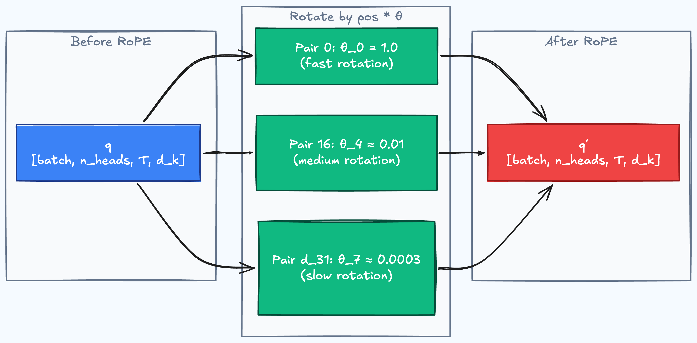
d_k = 16, matches our running example (d_model = 64, n_heads = 4 → d_k = d_model / n_heads = 16). Each pair k rotates at θ_k = 1 / 10000^(2k / d_k); the wavelength 2π / θ_k says how many positions complete one full cycle. Pair 0 cycles every ~6 tokens (useful for local order), pair 7 barely moves across 20K positions, preserving content with little positional distortion over short contexts.Why the Dot Product Encodes Relative Position
The core mathematical property: when you dot-product two vectors rotated in the same 2D plane, the rotation angles subtract.
- The positional part of the dot product depends on
pos_q - pos_k; the full score still depends on the content ofqandk - Translation invariant: “announced” attending to “CEO” at positions 2→1 produces the same positional signal as at positions 51→50
- No bias matrix needed: position lives in the vectors themselves, not in an additive term
This makes RoPE drop-in compatible with vanilla FlashAttention: there is no bias term to fuse in, because position information is already baked into Q and K before the dot product.
The Two Bands: Position vs. Semantics
Research from “Round and Round We Go! What makes Rotary Positional Encodings useful?” (Barbero et al., ICLR 2025) found that trained RoPE-based LLMs, such as Gemma 7B, empirically separate dimensions into two functional bands:
- High-frequency dimensions (low
k, fast rotation): in Gemma 7B, are heavily used to construct positional attention patterns, since fast rotation makes relative offsets easy to distinguish - Low-frequency dimensions (high
k, slow rotation): the paper suspects these carry more semantic information, since their rotation changes slowly enough over normal context lengths that content is less distorted
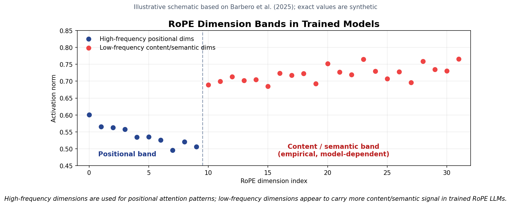
This division works well for short-to-medium contexts. But at very long sequences, even low-frequency dimensions can accumulate enough phase drift to interfere with the content information stored there.
Context Length Extension
RoPE’s base theta_base controls the wavelength spectrum. Larger bases lower the frequencies, so rotations accumulate more slowly across distance:
- Higher base → lower frequencies → slower rotation, which can support longer context when paired with the right training or scaling method
- LLaMA 3 uses
θ_base = 500,000(native 8K context); LLaMA 3.1 / 3.3 keep that base and add thellama3RoPE scaling scheme (low-/high-frequency interpolation) to reach 128K - Gemma 3 uses
θ_base = 10,000for local layers andθ_base = 1,000,000for global layers
Other extension methods include NTK-aware scaling (interpolation in the frequency domain) and YaRN (frequency interpolation plus attention scaling). All try to preserve useful relative phases over longer distances without destroying short-range resolution.
class RotaryPE(nn.Module):
"""
q'[2k] = q[2k] * cos(pos * θ_k) - q[2k+1] * sin(pos * θ_k)
q'[2k+1] = q[2k] * sin(pos * θ_k) + q[2k+1] * cos(pos * θ_k)
where θ_k = 1 / theta_base^(2k / d_k)
Args:
d_k: Dimension per head.
max_len: Maximum sequence length to precompute.
theta_base: RoPE base controlling the wavelength spectrum.
"""
def __init__(self, d_k: int, max_len: int = 4096, theta_base: float = 10000.0):
super().__init__()
# Frequencies: θ_k for k = 0, ..., d_k/2 - 1
freqs = 1.0 / (theta_base ** (torch.arange(0, d_k, 2).float() / d_k)) # [d_k/2]
angles = torch.outer(torch.arange(max_len).float(), freqs) # [max_len, d_k/2]
self.register_buffer("cos_cached", angles.cos()) # [max_len, d_k/2]
self.register_buffer("sin_cached", angles.sin())
def forward(self, x: torch.Tensor) -> torch.Tensor:
"""x: [batch, n_heads, seq_len, d_k] → rotated, same shape."""
T = x.size(2)
cos = self.cos_cached[:T].unsqueeze(0).unsqueeze(0) # [1, 1, T, d_k/2]
sin = self.sin_cached[:T].unsqueeze(0).unsqueeze(0)
# Split into interleaved pairs (2k, 2k+1) and apply 2D rotation per pair.
# HuggingFace's rotate_half often uses block pairing (k, k + d_k/2);
# the two layouts are equivalent up to a fixed permutation of head dims.
x_even = x[..., 0::2] # [B, h, T, d_k/2]
x_odd = x[..., 1::2]
rotated_even = x_even * cos - x_odd * sin
rotated_odd = x_even * sin + x_odd * cos
# Interleave back: [even0, odd0, even1, odd1, ...]
return torch.stack([rotated_even, rotated_odd], dim=-1).flatten(-2)In attention, apply RoPE separately to queries and keys, not values:
q_rot = rope(Q)
k_rot = rope(K)
scores = torch.matmul(q_rot, k_rot.transpose(-2, -1)) / math.sqrt(d_k)Run the full implementation with relative position property verification in the positional encoding notebook.
Gotchas and Trade-offs
- Drop-in fast-attention path: RoPE only modifies Q/K before attention, so vanilla FlashAttention can run without fusing an extra bias term
- Signed offset from absolute rotation: each vector is rotated by its absolute position, but the dot product sees the relative offset
pos_q - pos_k - Context extension usually needs continued training: changing
theta_baseor applying NTK / YaRN scaling shifts the model’s positional phases, so short fine-tuning is usually needed for best quality - Low-frequency band can degrade at extreme lengths: dimensions that carried content with little rotation at shorter contexts can accumulate enough phase drift to interfere with that content at much longer contexts
Example Architectures
- LLaMA 3 / 3.1 / 3.3: RoPE with
θ_base = 500,000(8K native; 3.1/3.3 reach 128K viallama3RoPE scaling) - Qwen 3 dense / MoE: RoPE with
θ_base = 1,000,000; deployment docs recommend YaRN only when extending beyond the 32K pretraining context - Qwen 3 2507 long-context variants: RoPE with
θ_base = 5,000,000and 262K configured context - Gemma 3: RoPE with local/global attention layers; local layers use base
10,000, global layers use base1,000,000 - Gemma 4: RoPE-family design; sliding layers use default RoPE, full-attention layers use proportional / partial RoPE (
partial_rotary_factor = 0.25, base1,000,000) - DeepSeek-V2/V3: RoPE (applied to a portion of the head dims, rest handled by MLA)
Key Takeaway
RoPE rotates Q and K vectors by position-dependent angles, encoding signed relative offset directly in the dot product without additive biases or learned embeddings. It’s the default PE in recent decoder-only open-weight LLMs: LLaMA, Mistral, Gemma, Qwen, and DeepSeek all ship with it.
Once rotation works, the next question is whether every dimension needs it. If low-frequency dimensions mostly carry content, applying rotation to all of them can become a liability at very long contexts.
From this point on, the question changes, from how to encode position to how much position the model actually needs. The following two sections cover recent developments (2025-2026). If you’re here for the fundamentals, the RoPE section above is the current industry default.
Bonus: p-RoPE (Gemma 4)
Once you understand RoPE, p-RoPE is simple: don’t rotate every dimension.
Barbero et al. observed that trained RoPE models tend to use high-frequency dimensions for positional patterns, while lower-frequency dimensions appear to carry more content. At very long contexts, even slow rotations can accumulate phase drift. Gemma 4 uses proportional RoPE (p-RoPE) in global attention layers: apply RoPE only to a fraction p of the head dimension and leave the rest position-free.
For p = 0.25:
first 25% of head dims: RoPE rotation applied
remaining 75%: no RoPE rotation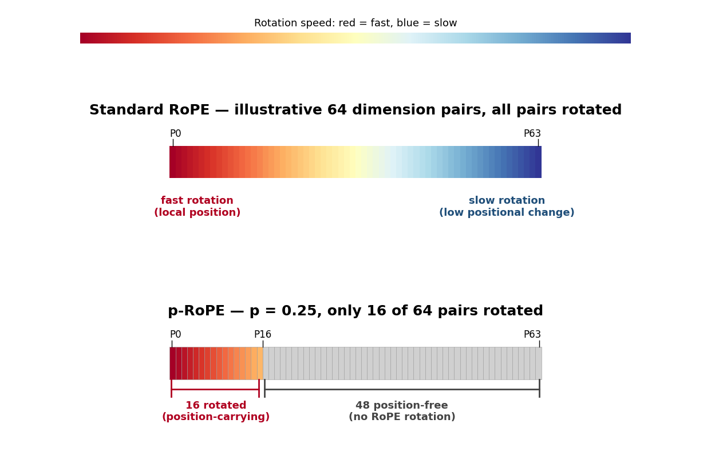
- Standard RoPE: every dimension pair rotates, from fast to slow frequencies
- p-RoPE: only the highest-frequency portion rotates; the rest avoids rotation-induced drift
Illustrative split for p = 0.25: 16 of 64 dimension pairs rotate, while 48 pairs are left position-free. Gemma 4’s full-attention layers use the same ratio through partial_rotary_factor = 0.25 with base 1,000,000; sliding-window layers still use standard RoPE with base 10,000 for local order.
The trade-off is positional bandwidth: with p = 0.25, only one quarter of the rotated head dimensions carry explicit position. Gemma 4 makes that trade in its full-attention layers, where long-context drift matters most.
Key takeaway: p-RoPE is not a new positional encoding family so much as a selective RoPE rule: rotate the dimensions most useful for position, leave the rest available for content. It keeps RoPE’s relative-position behavior while reducing long-context phase drift.
NoPE and Hybrid Positional Layers
p-RoPE bets that 75% of dimensions can run without explicit position information, and Gemma 4 ships on that bet. If some dimensions survive without explicit position, can a whole layer do the same?
Haviv et al. showed in “Transformer Language Models without Positional Encodings Still Learn Positional Information” (EMNLP Findings, 2022) that causal decoder-only transformers trained with no positional encoding are competitive with standard models. Kazemnejad et al. (“The Impact of Positional Encoding on Length Generalization in Transformers”, NeurIPS 2023) went further: on algorithmic tasks (addition, sorting, polynomial evaluation), NoPE outperforms all explicit PE methods at length generalization. On general language modeling, NoPE is competitive but not dominant, which is why the practical frontier is hybrid, not pure NoPE.
No PE addition, no rotation, no bias. Just token embeddings into the attention layers.
Why It Works: The Causal Mask Provides a Position Cue
In a causal (autoregressive) transformer, the attention mask reveals position implicitly:
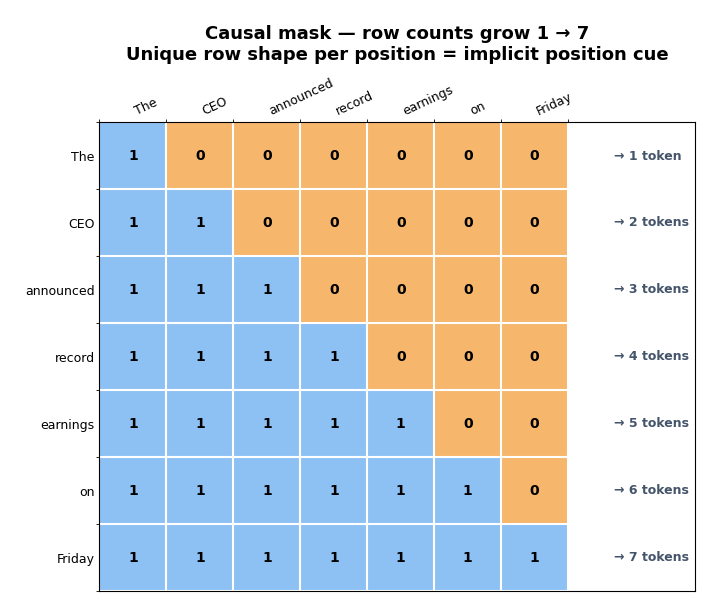
- “The” attends to 1 token → the model infers “I am position 0”
- “Friday” attends to 7 tokens → the model infers “I am position 6”
- Each row has a unique “shape”, the number of available keys is a direct proxy for absolute position
The causal mask gives the model an implicit position cue: row i can see exactly i + 1 keys. NoPE models can learn to turn that row shape into internal position representations.
A second mechanism reinforces this: nearby token embeddings in causal transformers naturally develop higher similarity than distant ones, creating a position-dependent similarity gradient, even in untrained models (COLING 2025). The causal mask architecture itself induces positional structure.
class NoPEAttention(nn.Module):
"""
Causal self-attention with NO positional encoding.
Implicit position cues come from the causal mask and learned attention dynamics.
"""
def __init__(self, d_model: int, n_heads: int):
super().__init__()
self.n_heads = n_heads
self.d_k = d_model // n_heads
self.W_q = nn.Linear(d_model, d_model, bias=False)
self.W_k = nn.Linear(d_model, d_model, bias=False)
self.W_v = nn.Linear(d_model, d_model, bias=False)
self.W_o = nn.Linear(d_model, d_model, bias=False)
def forward(self, x: torch.Tensor) -> tuple[torch.Tensor, torch.Tensor]:
B, T, _ = x.shape
Q = self.W_q(x).view(B, T, self.n_heads, self.d_k).transpose(1, 2) # [B, h, T, d_k]
K = self.W_k(x).view(B, T, self.n_heads, self.d_k).transpose(1, 2)
V = self.W_v(x).view(B, T, self.n_heads, self.d_k).transpose(1, 2)
# No PE: no rotation, no bias, no position embedding added
scores = torch.matmul(Q, K.transpose(-2, -1)) / math.sqrt(self.d_k)
# Causal mask, the only implicit position cue in this layer
causal_mask = torch.triu(
torch.ones(T, T, dtype=torch.bool, device=x.device), diagonal=1
)
scores = scores.masked_fill(causal_mask.unsqueeze(0).unsqueeze(0), float("-inf"))
weights = F.softmax(scores, dim=-1) # [B, h, T, T]
context = torch.matmul(weights, V) # [B, h, T, d_k]
context = context.transpose(1, 2).contiguous().view(B, T, -1)
return self.W_o(context), weightsWhy Plain NoPE Does Not Work for Encoders
This only works because the causal mask is asymmetric. In a bidirectional encoder (BERT-style), every token attends to every other token, the mask is all 1s. “CEO” at position 1 sees the same set of keys as “CEO” at position 4. No implicit position signal exists, so explicit PE remains necessary.
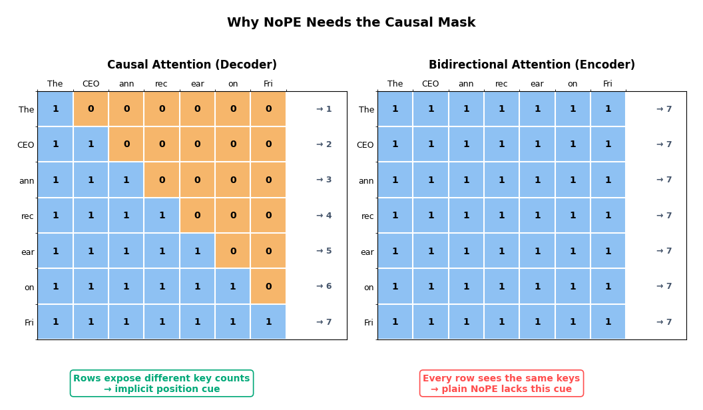
The Hybrid: RoPE + NoPE
Yang et al. (“RoPE to NoPE and Back Again”, 2025) found that RoPE and NoPE layers specialize for different tasks:
- RoPE layers: strong recency bias, good at local patterns. Handle nearby context
- NoPE layers: weak recency bias, strong retrieval. Handle needle-in-a-haystack across long contexts
Yang et al. propose a practical 3:1 interleaving pattern:
Layer pattern (repeating):
3 × RoPE + Sliding Window (local focus, positional bias)
1 × NoPE + Full Attention (global retrieval, no positional bias)They report stronger long-context retrieval and lower training/inference cost than full-RoPE baselines: RoPE layers use sliding-window attention for local work, while NoPE layers keep full attention for retrieval.
SmolLM3 (HuggingFace, 3B) adopted this pattern: RoPE on 3 out of every 4 layers, NoPE on the 4th.
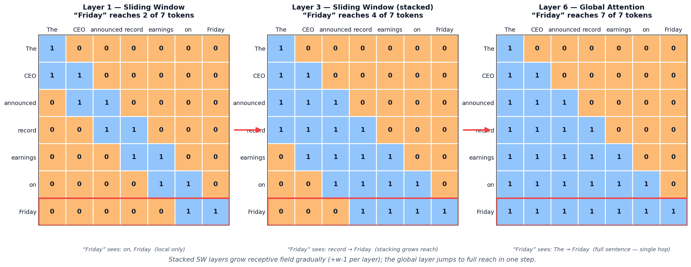
Gotchas and Trade-offs
- Decoder-side mechanism: NoPE relies on the asymmetric causal mask for implicit position. Plain NoPE does not work for bidirectional encoder layers, where every row sees the same keys
- Length generalization: on algorithmic tasks, NoPE outperforms all explicit PE schemes on generalization to unseen sequence lengths (Kazemnejad et al., NeurIPS 2023), but the generalization window is still finite
- Hybrid is the practical choice: pure NoPE leaves the model without explicit positional signals for local patterns where recency matters. The RoPE+NoPE hybrid covers both needs
- Conceptual link to p-RoPE: p-RoPE keeps 75% of dimensions position-free; NoPE layers keep 100% of dimensions position-free. The hybrid RoPE+NoPE architecture achieves a similar effect at the layer level instead of the dimension level
Key Takeaway
Causal attention masks provide implicit position cues, making explicit PE optional in some decoder-only layers. The practical frontier is hybrid: interleave RoPE layers for local positional structure with NoPE layers for full-context retrieval, getting the benefits of both while reducing computation.
Which PE Should You Use?
The trajectory across this post: from injecting position into the input (absolute), to into the attention score (relative, ALiBi), to into the query-key vectors (RoPE), to only where needed (p-RoPE), to not at all (NoPE). Each step pushed the question: how little explicit position information can you get away with?
- Decoder-only LLM, within its native context → RoPE. Industry default. Used by LLaMA, Mistral, Gemma, Qwen, DeepSeek
- Decoder-only, extended long context (128K+) → RoPE scaling, hybrid RoPE + NoPE layers (SmolLM3), or p-RoPE (Gemma 4). The newer hybrids reduce long-distance rotation exposure at different granularity: p-RoPE by dimension, RoPE+NoPE by layer
- Need length extrapolation without retraining → ALiBi. Linear bias generalizes naturally to unseen positions: but adoption has stalled as RoPE scaling methods (NTK, YaRN) matured
- Encoder model (BERT-style) → absolute PE (learned) or relative PE. NoPE doesn’t work without a causal mask
- Research / pedagogy → sinusoidal PE. Simplest, no learned parameters, good for understanding the fundamentals
References
- Vaswani et al., “Attention Is All You Need”, NeurIPS 2017, sinusoidal positional encoding
- Shaw et al., “Self-Attention with Relative Position Representations”, NAACL 2018, relative position representations
- Dai et al., “Transformer-XL: Attentive Language Models Beyond a Fixed-Length Context”, ACL 2019, decomposed relative PE
- Raffel et al., “Exploring the Limits of Transfer Learning with a Unified Text-to-Text Transformer” (T5), JMLR 2020, relative position buckets
- Su et al., “RoFormer: Enhanced Transformer with Rotary Position Embedding”, 2021, RoPE
- Press, Smith, Lewis, “Train Short, Test Long: Attention with Linear Biases Enables Input Length Extrapolation”, ICLR 2022, ALiBi
- Haviv et al., “Transformer Language Models without Positional Encodings Still Learn Positional Information”, Findings of EMNLP 2022, NoPE
- Kazemnejad et al., “The Impact of Positional Encoding on Length Generalization in Transformers”, NeurIPS 2023, NoPE outperforms explicit PE on length generalization
- Barbero et al., “Round and Round We Go! What makes Rotary Positional Encodings useful?”, ICLR 2025, RoPE two-band analysis
- Yang et al., “RoPE to NoPE and Back Again: A New Hybrid Attention Strategy”, 2025, hybrid RoPE/NoPE architecture
- Gemma 4 model card, Google DeepMind, 2026, p-RoPE with
p = 0.25